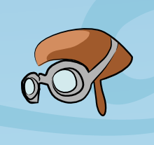

¡Hola!
Estás viendo TXT_NOMBRE
Para esta plantilla utilizamos revealjs, una biblioteca para hacer presentaciones
¿Cómo funciona?
reveal.js te permite escribir tus presentaciones (o slides) usando HTML, como si fueran páginas webs.
Páginas verticales
Las páginas de tu presentación pueden colocarse verticalmente.
Podés usar la tecla Espacio si lo que buscás es recorrer todas las páginas sin perderte nada.
Subsuelo nivel 1
Las páginas hacia abajo son utiles para añadir mayor detalle justo debajo de del nivel principal.
Subsuelo nivel 2
Eso, puede haber muchos niveles hacia abajo. ¡Ya es hora de subir!
Desglose
Pulsando la tecla ESC se muestra una vista "aérea" de todas las páginas.
Efectos de cámara
Incluso, hay algo útil a veces... podés mantener pulsada la tecla ALT y hacer click sobre casi cualquier elemento, como estas imágenes. Fijate lo que sucede:

Efectos de transición
Existen varias transicioes para elegir:
None -
Fade -
Slide -
Convex -
Concave -
Zoom
Elegí una y luego cambiá de página para ver como queda.
Temas
reveal.js también incluye algunos temas:
Black (default) -
White -
League -
Sky -
Beige -
Simple
Serif -
Night -
Moon -
Solarized
Fondos
Usando el siguiente código también se pueden definir imágenes como fondo:
<section data-background="imagenes/fondo.jpg">Si en realidad solo querés un color de fondo, podés definir
el color usando data-background="red"
Hay mucho más...
Hay muchas cosas interesantes que decir sobre revealjs, ¡pero esto es solo una plantilla inicial!. Así que te dejamos estos recursos: